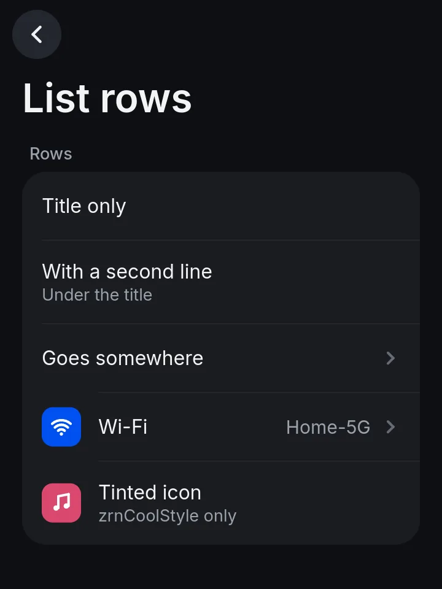
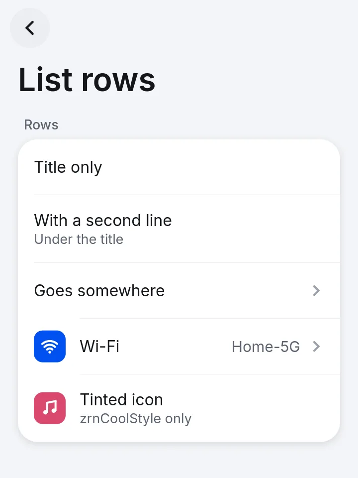
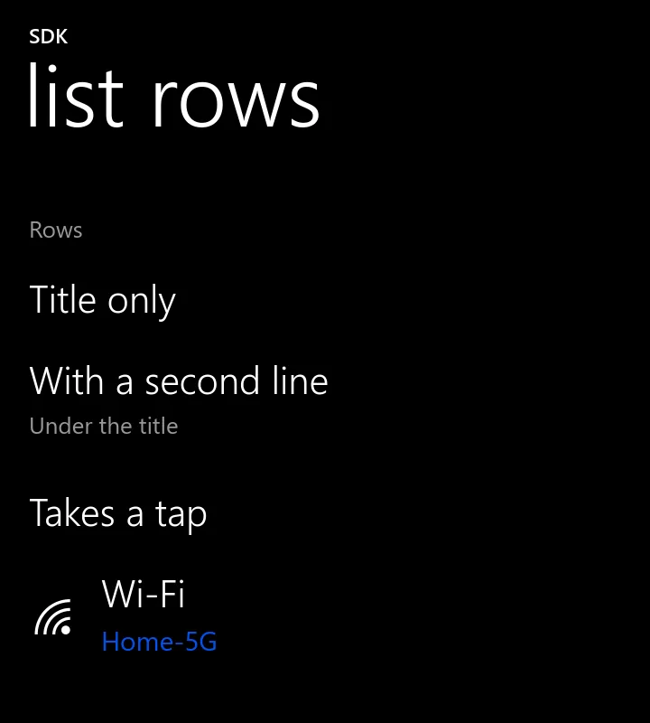

Make apps for ztOS
ztOS apps are written in C, C++, Rust or Python against one small GPU toolkit, libzrnui. They ship as one signed .zexec file, and the store builds them from your source.
At commit 8f6fb14 libzrnui runs on a laptop in a virtual compositor. It has not run on the phone, the store app on the phone cannot install these packages yet, and permissions are declared but not enforced. Status and gaps has the whole list.
git clone https://github.com/Zerone-Laboratories/zrn-sdk
cd zrn-sdk && export PATH="$PWD/tools:$PATH"
zrn doctor
zrn new "Notes" --lang c
cd notes && zrn build && zrn render out.png


How the code on this site was checked
Each element's snippet is compiled in all four languages and rendered with zrn render. The renders are then compared pixel by pixel across languages. They match exactly, except the progress page, whose moving bar is caught at a different instant each time. The generator and report are in this site's repository. Animation numbers are read out of the C source and each one names its file.
Checked against zrn-sdk commit 8f6fb14. Pictures are real renders of code that compiled. Source and proof.